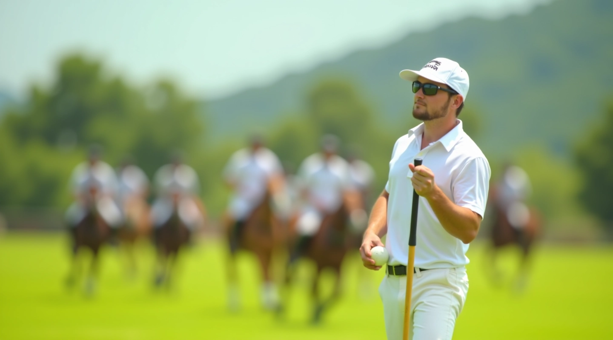
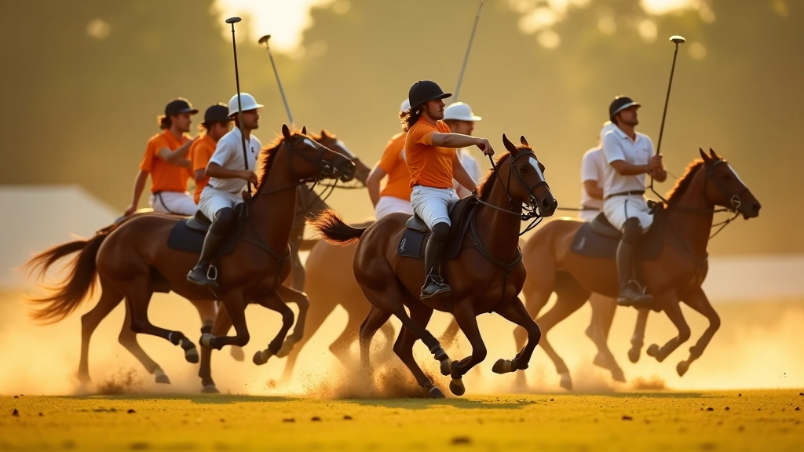
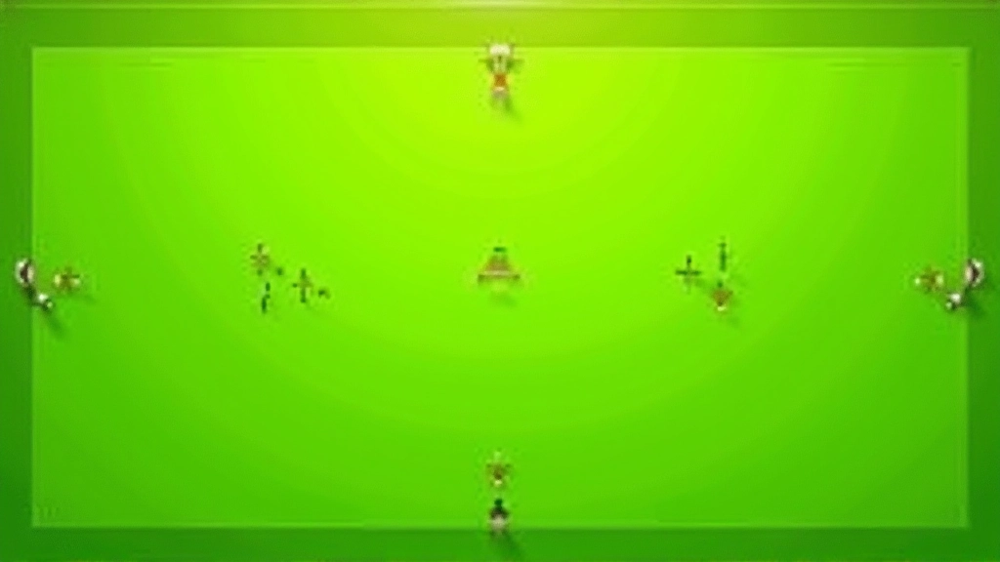
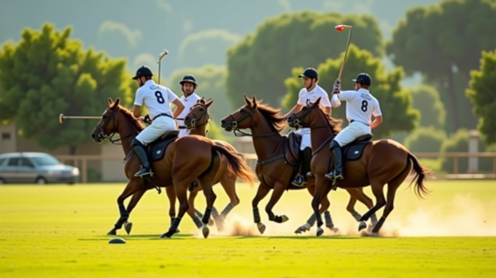
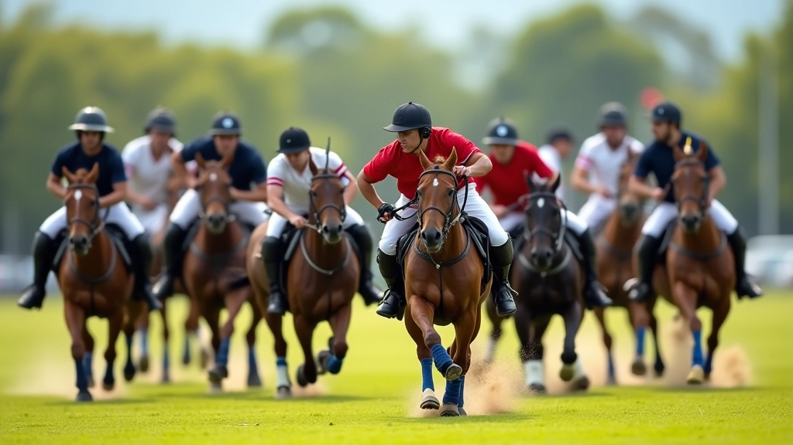
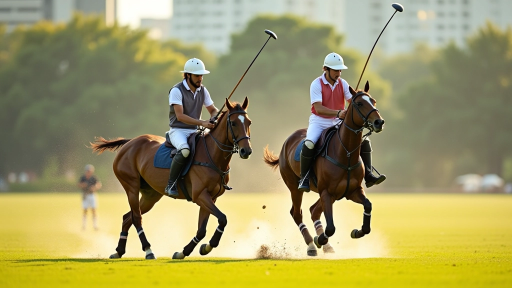

تقنيات المسك الصحيح للعصا والكرة
تعرف على الطريقة الصحيحة لمسك عصا البولو والتحكم بالكرة بدقة. نصائح عملية من المدربين المتخصصين.
افهم الاستراتيجيات الأساسية للعبة والمواقع التكتيكية على الملعب. نصائح عملية لاتخاذ القرارات الصحيحة أثناء المباراة وتحسين أدائك الجماعي.

لا تقتصر لعبة البولو على المهارات الفردية فقط. الفريق الذي يفهم التكتيكات الأساسية ويعرف متى يتحرك ومتى يبقى في مكانه — هذا الفريق يفوز. نحن هنا لنشرح لك كيف يعمل هذا.
سواء كنت لاعباً جديداً أم متقدماً، فهم المواقف التكتيكية يحسّن من قراراتك أثناء المباراة. ستتعلم كيف تقرأ اللعبة، تتوقع حركات الخصم، وتنسق مع فريقك بكفاءة أكبر.
فهم ديناميكية اللعب والمواقع على الملعب
التحرك المنسق مع الفريق لإنشاء فرص هجومية
التموضع الصحيح للمدافعين ومنع الفرص الخطيرة
كل فريق بولو يحتاج إلى تشكيلة واضحة. التشكيلة الكلاسيكية تقسم اللاعبين إلى مهاجمين ودافعين، لكن الأدوار تتداخل طوال الوقت. اللاعب الأول يركز على الهجوم من الجانب. اللاعب الثاني يدعمه ويحمي الكرة. اللاعب الثالث متوازن — يهاجم ويدافع حسب الحاجة. اللاعب الرابع هو حارس المرمى الأساسي.
لكن هذا ليس حجراً منقوشاً. الفريق الجيد يتكيف مع مستوى الخصم ونقاط ضعفهم. إذا كان الخصم قوياً جداً في الدفاع، قد تحتاج إلى تشكيلة أكثر دفاعية. إذا كنت متقدماً بأهداف، تراجع وحافظ على الكرة.

البولو يتحرك بسرعة. في ثانية واحدة، الموقف يتغير. أنت تحتاج إلى قراءة اللعبة بسرعة. أين الكرة؟ أين الخصم؟ هل لديك مجال للمراوغة؟ هل من الأفضل التمرير؟
الخطأ الشائع: اللاعبون الجدد يركضون خلف الكرة فقط. الفريق الجيد يتنبأ بأين ستذهب الكرة ويتحركون قبلها. هذا يأتي مع الممارسة والخبرة. تعلم من أخطائك. شاهد الفريق الذي يلعب بشكل جيد وقلّد حركاتهم.
المعلومات الواردة في هذا المقال هي لأغراض تعليمية عامة فقط. كل لاعب ولاعبة يختلفون في قدراتهم وأسلوب اللعب. تدرب تحت إشراف مدرب مؤهل لضمان تطبيق صحيح للتقنيات. الظروف على الملعب تختلف باختلاف الفريق والمنافس والأحوال الجوية. استخدم هذه الإرشادات كنقطة انطلاق وليس كقاعدة ثابتة.
الهجوم الفعال ليس عشوائياً. يبدأ من الخلف — حارس المرمى يبدأ باللعبة ويمررها للاعب الثالث. الثالث يتقدم ويمررها للثاني. الثاني يرسلها للأول الذي ينطلق بسرعة نحو المرمى. كل واحد يعرف دوره. كل واحد يتحرك في الوقت المناسب.
الأهم: المسافة بين اللاعبين. قريبون جداً؟ الخصم يقطع الكرة بسهولة. بعيدون جداً؟ التمرير يصعب ويفقد الفرصة. المسافة المثالية حوالي ٧-١٠ أمتار. هذا يعطيك وقتاً للتفكير ويحافظ على الهجوم متماسكاً.


الدفاع ليس مجرد منع الهدف. إنه منع الفرص قبل أن تنشأ. حارس المرمى يراقب خط المرمى. لاعبان جانبيان يقطعان المسارات. لاعب أمامي يضغط على حامل الكرة. كل واحد في مكانه الصحيح.
الخطأ الشائع: الدفاع المتقدم جداً يترك مساحة خلفه. الدفاع المتراجع جداً يسمح بالتمرير السهل. التوازن هو المفتاح. ادرس نمط الخصم. هل يفضلون المراوغة أم التمرير؟ هل يهاجمون من اليسار أم اليمين؟ اضبط موقعك حسب ذلك.
الفريق الذي يتكيف يفوز. إذا كنت متقدماً بثلاثة أهداف، لا تستمر في الهجوم المجنون. قلل السرعة، احتفظ بالكرة، استنزف الوقت. إذا كنت متأخراً، تجرأ أكثر. ركز على الهجوم السريع والكرات العالية.
الطقس يؤثر أيضاً. الملعب الرطب يبطئ الكرة. الرياح القوية تغير مسار الكرة. الحرارة تتعب اللاعبين. كن مرناً. غيّر تشكيلتك إذا لزم الأمر. استخدم بدائل قويين. راقب لياقة فريقك وأخذ فترات راحة عند الحاجة.

الاستراتيجية في البولو ليست معقدة كما تبدو. فهم التشكيلات الأساسية، قراءة اللعبة السريعة، والتكيف مع الظروف — هذا يحسّن من مستواك بشكل كبير. ابدأ بالمبادئ البسيطة. مارسها حتى تصبح طبيعية. بعدها، يمكنك الارتجال والابتكار.
تذكر: البولو فريق. الاستراتيجية الأفضل هي التي يفهمها كل لاعب ويطبقها معاً. التواصل مع زملائك، تعاونوا، وتعلموا من كل مباراة. مع الوقت، ستصبح الحركات التكتيكية سهلة وطبيعية.